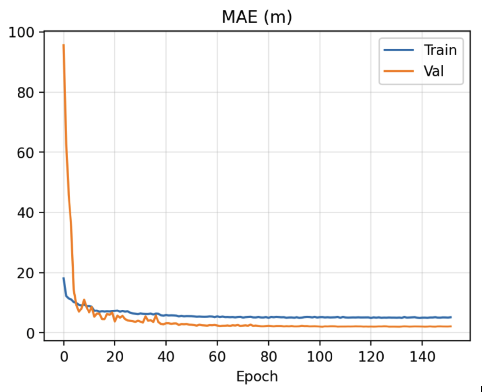
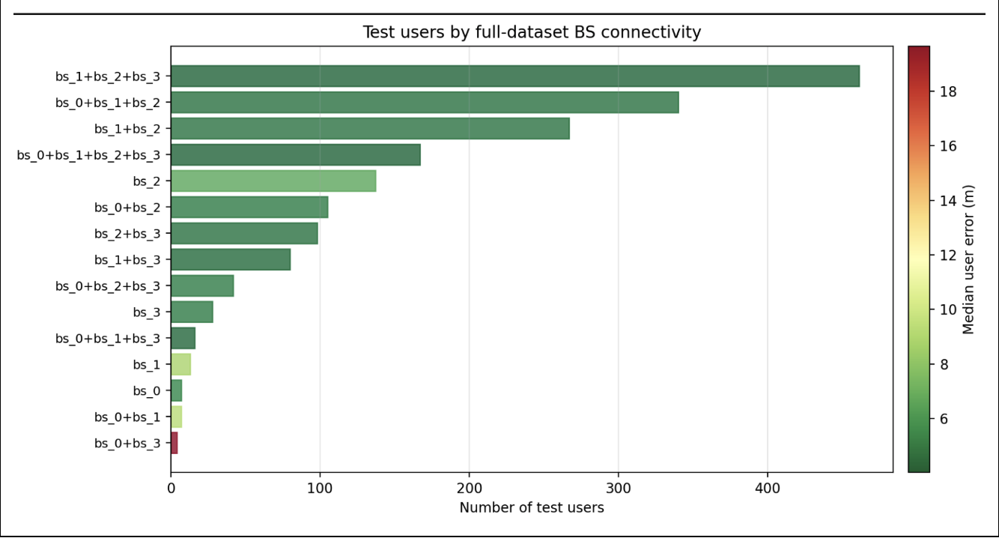

- Coded, tested, and debugged FPGA verification modules.
- Translated verification requirements into sequence diagrams, outlining specific OSVVM calls and messages between verification components.
- Adhered to strict coding standards and documentation requirements in preparation for an ICDR (Internal Critical Design Review).
We are developing AI/ML-based positioning algorithms for realistic urban environments, using NVIDIA Sionna to generate synthetic channel data from site-specific wireless digital twins. Alongside the algorithmic work, we are interested in the fundamental estimation-theoretic limits on what any positioning system can achieve in these settings. The primary focus is FR3 bands. My personal contributions include:
- Integrated Overture Maps building-height data to replace missing OSM heights, improving wireless digital twin accuracy.
- Implemented and evaluated CNN-based positioning algorithms, comparing performance and training efficiency.
- Generated synthetic wireless datasets using realistic 3D scenes and ray tracing with NVIDIA Sionna.
- Supported development of preprocessing pipelines for multi-base-station channel tensors and position labels.
- Surveyed recent localization literature and presented findings to the lab to inform ongoing research.


